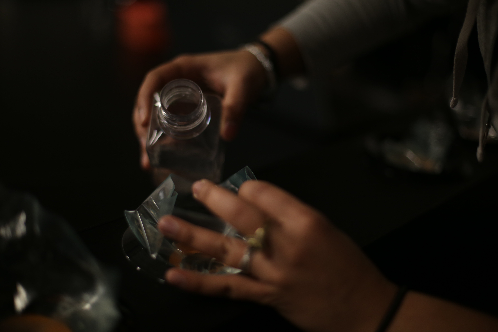

Pyrocystis is a microbe that is commonly found in the sea. This is a series of experiments that looks at their reaction to music.
Tools Used : Pyrocystis
In collaboration with Satbir Multani
This project was an exploration of understanding how microbes respond to different stimuli.
In this particular experiment, we had access to the knowledge that vibrations caused the pyrocystis to emit light. With that in mind, we were curious to see how they responded to music.

We obtained speakers on which the vibration of the diaphram was visible. We then trained our microbes' day-night cycle so that they glow during the day (their night). Post that, it was a matter of choosing the right music/vibration for the microbes to respond to.
We tested with high bass, strings and single beats. The conclusion we drew was that, they respond best to single beats. While they do respond to string and multiple vibration of low amplitude, it causes their light to drain fast. This implies that they stop emitting light for around 20-30 minutes after that.
← Back to Home